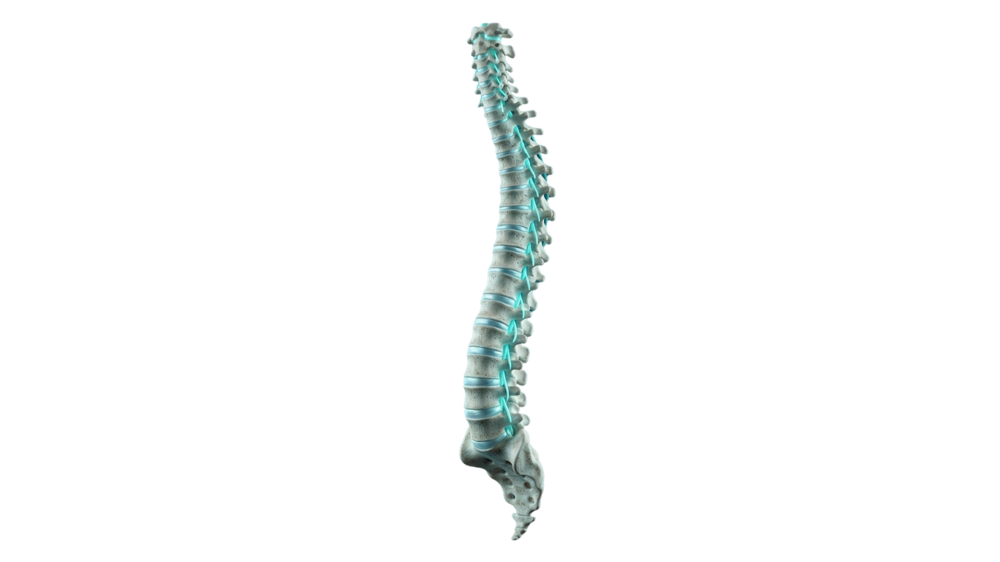
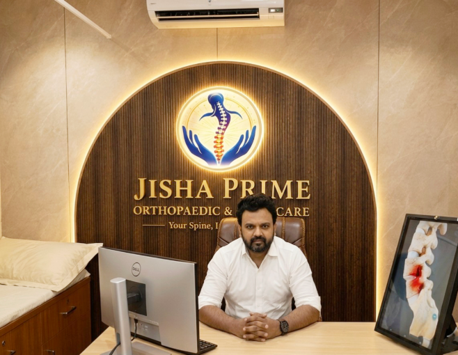
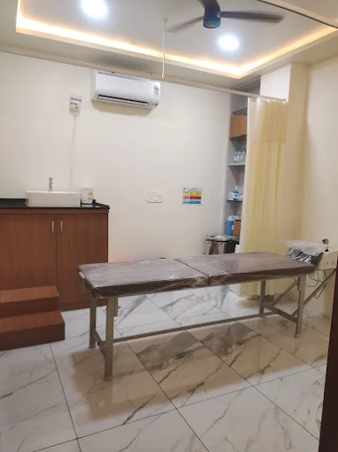

Advanced treatment, expert care, and modern rehabilitation tailored for every patient. Led by Dr. Prajwal Narayan in Mysore.
Years Experience
Surgeries Done
Google Rating




At Jisha Prime Orthopaedic & Spine Care, we are dedicated to providing world-class medical services to the community of Mysore and beyond. Our holistic approach ensures every patient receives a tailored treatment plan.
Dr. Prajwal Narayan is renowned for his expertise in minimally invasive spine surgeries, joint replacements, and complex trauma management.
Years Exp.
Surgeries
Satisfaction
Comprehensive care for all your musculoskeletal and spinal health needs under one roof.
Explore common spinal conditions and understand how our treatments can help you.
Our expert team specializes in diagnosing and treating a wide range of spine-related conditions using advanced technology and evidence-based approaches.
Cutting-edge technology for precision diagnosis and treatment.
Computer-assisted navigation for accurate implant placement and minimal tissue damage.
Advanced imaging analysis for accurate detection of spinal pathologies and conditions.
Evidence-based rehabilitation with advanced physiotherapy equipment and protocols.
Real stories from real patients who have regained their mobility and quality of life.
"I had some back problems. I ignored them for about 2 months thinking it would heal. I went to Dr. Prajwal by coincidence. I was diagnosed and an x ray was taken. Muscle degeneration. Some supplements and physio exercises were given. I recovered surprisingly. Excluding consultation fee the medicine hardly cost me 40 rupees. X-ray 100.
My message to the reader is simple: not every pain ends in surgery. Sometimes, all you need is a doctor’s visit, the right prescription, and timely care.
Don’t ignore your body waiting for things to get worse. A small problem treated early can save you months of pain, unnecessary stress, and a lot of money later. Just take appointment, don't think too much."
Spine Care Patient
"Best spine surgeon in Mysuru"
Spine Surgery Patient
"I recently visited Jisha Prime Orthopedic and Spine Care Clinic for my mother’s hand fracture treatment, and I’m extremely satisfied with the experience.
Dr. Prajwal sir treated her with great care and professionalism. He explained the condition and treatment very clearly, which gave us a lot of confidence. He is very polite, humble, and truly down-to-earth in his approach. He is truly a gifted doctor for our city.
The entire staff was also very supportive, friendly, and attentive throughout the process. They made sure we were comfortable and well taken care of.
Highly recommend this clinic for anyone looking for quality orthopedic care."
Fracture Care Patient
"Clean and modern facility. The attention to detail in patient care is evident. Highly recommended!"
Clinic Patient
"I had been suffering from severe lower back pain due to L4L5 disc prolapse, and it was affecting my daily life significantly. Fortunately, I consulted Dr Prajwal Narayan, and it was the best decision I made.
Dr Prajwal Narayan is truly one of the best orthopaedic and spine surgeons. He carefully listened to my symptoms, explained my condition in a very clear and reassuring manner, and suggested the right treatment plan. What impressed me the most was his conservative approach he treated my disc prolapse successfully without surgery, which brought me great relief.
His professionalism, patience, and dedication towards patient care are exceptional. I am now able to return to my normal activities without pain. I highly recommend Dr Prajwal Narayan to anyone suffering from spine or orthopaedic problems in Mysore.
Truly hard working !!!!!!!!! I admire his knowledge to handle people , pain , their emotions!!!! Thank you sir 😇"
Disc Prolapse Patient
"Recognized as a leading medical professional in Mysuru, he consistently demonstrates exceptional patient care through a polite demeanor, swift identification of medical concerns, and clear communication of diagnoses."
Orthopaedic Care Patient
Schedule your consultation with Dr. Prajwal Narayan today.